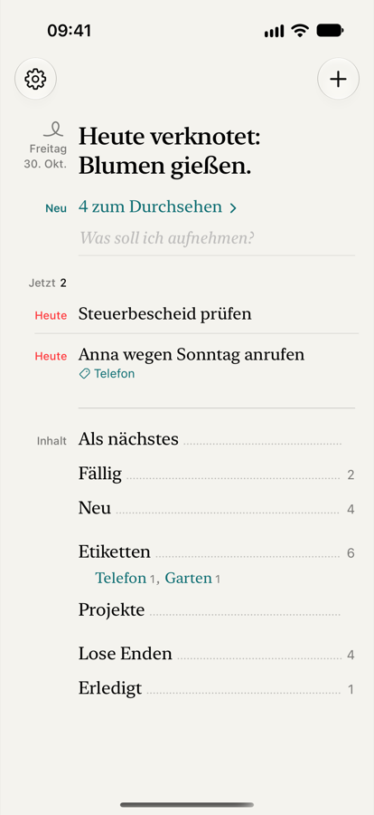
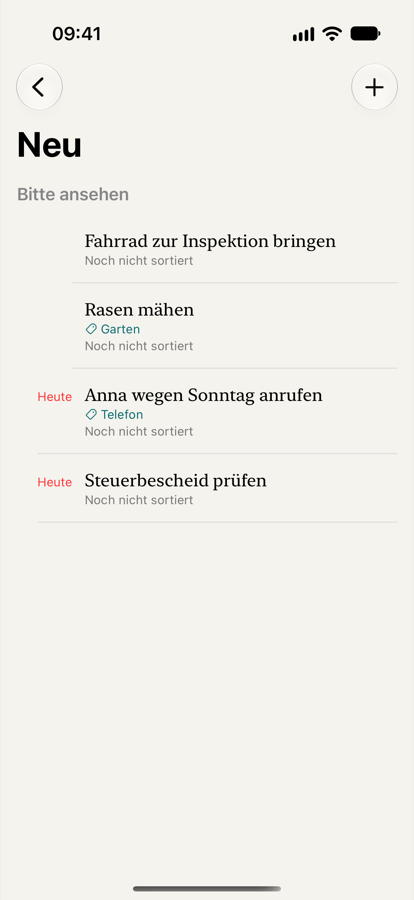

#1000, Teil von „kein Modell mehr“. Heute wartet jede neue Aufgabe unter „Neu“ auf ein „Passt“. Ohne Modell gibt es nichts Erfundenes mehr zu prüfen, also verschwinden die Zeile „N zum Durchsehen“, der Eintrag „Neu“ im Inhalt, die Liste „Bitte ansehen“ und der Knopf „Passt“ – auf iPhone, iPad und Mac. Die Aufgaben selbst standen schon immer zusätzlich in „Jetzt“, „Fällig“ oder „Lose Enden“; dort bleiben sie einfach.
Unter dem Satz des Tages steht nur noch die Schreibzeile. Im Inhalt fehlt „Neu“.

Jeder Satz wird mit der Eingabetaste zur Aufgabe. In Entwurf A steigt er wie heute als Zeile über die Schreibzeile – mit seinem Datum am Rand –, nur ohne Kopf „Neu“ und ohne Zahl. Wenn du aufhörst (Tastatur weg, Tipp daneben), falten sich die Zeilen weg; die Aufgaben stehen in „Jetzt“, wenn sie heute fällig sind, sonst in „Lose Enden“.
Alternative B ist ein eigener Look: Schreibmaschinenschrift auf einem gestrichelten Zettel statt Serif auf Papier. Dafür fiele die Ruhe-Regel der Startseite (#677: keine getönten Flächen, Serif ist Inhalt). Gewinn: man sieht sofort, wohin ein Satz gegangen ist. Ich empfehle A – es ist die heutige Schublade ohne „Neu“, nichts Neues zu lernen.
Die Liste „Neu“ mit „Bitte ansehen“, „Noch nicht sortiert“ und „Titel nicht geprüft“ gibt es nicht mehr, auch nicht das Wischen und den Menüpunkt „Passt“. Im Detail einer Aufgabe fällt der Knopf „Passt“ weg; sonst bleibt das Detail, wie es ist.

Heute färbt die App ein Datum oder eine Dauer, die eine Regel gesetzt hat, in Akzentfarbe, bis du die Aufgabe einmal öffnest. Das war das Gegenstück zum Durchsehen. Ohne „Neu“ gibt es keinen Ort mehr, an dem man das bestätigt.
Aufgaben, die heute noch in „Neu“ liegen, gehen ohne dein Zutun in ihre Listen über – sie standen dort ohnehin schon. Watch, Widgets und die Verbindung zu Claude zeigen „Neu“ heute schon nicht; dort ändert sich nichts.